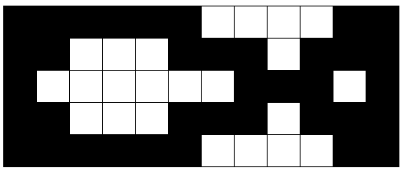
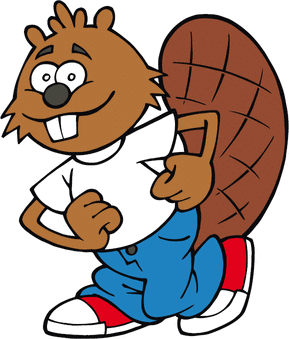
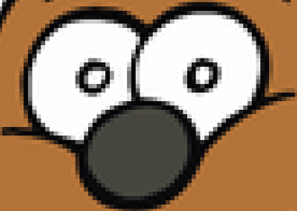
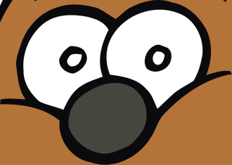

Castor veut dessiner un poisson sur son ordinateur.
Cependant, son ordinateur est assez vieux, et il ne permet d'enregistrer qu'un petit nombre de « pixels » (les petits carrés qui constituent une image numérique).
Aidez Castor à créer son image. Pour cela, noircissez toutes les cases de la grille qui contiennent un morceau de trait noir du poisson. Les autres cases doivent rester blanches.
Il fallait noircir les cases de la grille comme montré ci-dessous.

Cette tâche fait manipuler une notion utile en infographie, domaine de l'informatique qui consiste à créer, mémoriser et transformer des images avec des dispositifs informatisés. L'image construite dans cet exemple est une image pixellisée, ou image bitmap. C'est-à-dire qu'elle est constituée d'un ensemble de points (pixels) placés sur une grille. Chaque point possède le code de sa couleur. Dans l'exemple, il n'y a que deux couleurs : noir et blanc. Pour mémoriser une telle image, il suffit de mémoriser pour chaque point ses coordonnées dans la grille et le code de sa couleur. L'image sera d'autant plus précise que la grille sera très fine, c'est-à-dire comportera beaucoup de points. Sur l'exemple, l'image obtenue est peu précise car la grille utilisée est assez grossière.
Il y a deux manières principales de représenter des images de manière numérique :
Avec une image pixellisée, dès que l'on zoom un peu trop, on voit apparaître des carrés. Au contraire, avec des images vectorielles, on peut zoomer autant que l'on veut, l'image reste toujours parfaitement nette.
Regardons par exemple la différence avec le logo du concours Castor, en comparant une image pixellisée avec une image vectorielle du même Castor. Tant qu'on ne zoom pas, il n'y a aucune différence à l'affichage.
| Image pixellisée, pas de zoom | Image vectorielle, pas de zoom | ||
|  |
En revanche, dès que l'on zoom, on voit clairement apparaître l'intérêt de l'image vectorielle.
| Image pixellisée, zoom 6x | Image vectorielle, zoom 6x | ||
|  |  |
Pour limiter l'effet de la pixellisation, la plupart des logiciels modernes comme les logiciels de photos ou bien les navigateurs web utilisent une technique d'interpolation pour essayer de rendre les contours plus continus. Cette technique permet de zoomer dans les images pixellisées sans faire apparaître de carrés, comme illustré ci-dessous à gauche. Néanmoins le résultat n'est jamais aussi net qu'avec une image vectorielle.
| Image pixellisée, zoom 6x avec interpolation | Image vectorielle, zoom 6x |